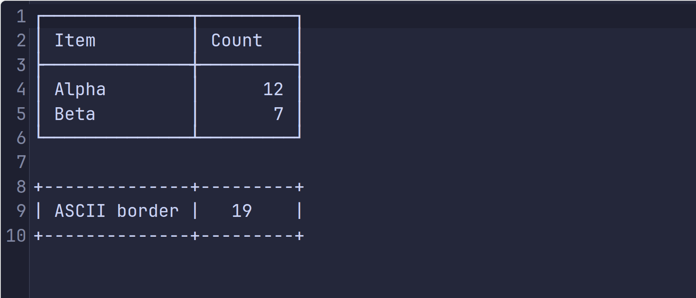
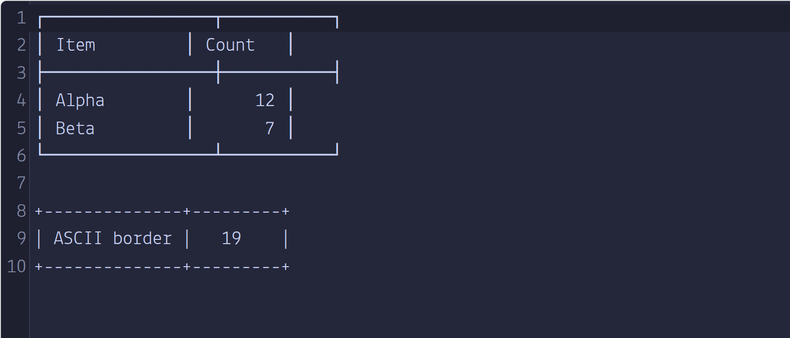

01 ↘
Bring your own font
Place each unpatched family, with its license, in fontsrc/FontName/. Regular, Bold, Italic, and other faces stay together.
Add Nerd Fonts icons to the typefaces you already use. Keep the source faces, patch every style, validate the result, and get a separate ZIP for each family.
Built around the official Nerd Fonts patcher · TTF and OTF input · Linux and Homebrew script
INSIDE THE PATCH
A font file maps codepoints to drawn shapes called glyphs. The patcher reads the source font, adds icon glyphs from Nerd Fonts collections, writes their mappings, and saves a new font file. Your original file is kept untouched.
Icon outlines come from the release's glyph files. The Python patcher decides where and how to place them.
Each icon gets a codepoint so applications can request it, just as they request a letter.
Width rules decide whether an icon fits one terminal cell, overhangs, or takes proportional space.
The build checks that thousands of icon codepoints exist before packaging the family.
THE WORKFLOW
No manual FontForge session. The repo keeps the patcher, glyph assets, patched faces, and ZIPs in predictable places.
Place each unpatched family, with its license, in fontsrc/FontName/. Regular, Bold, Italic, and other faces stay together.
Select families and confirm the Nerd Fonts version. The script downloads the matching patcher archive and chooses a suitable width mode per face.
Validated faces appear under patched/. Each family receives a ZIP under releases/ with available font and glyph license notices.
ONE ENTRY POINT
Start interactively, or select all families for an unattended rebuild. Package installation is supported on Debian/Ubuntu and Homebrew systems.
Read the full quickstart$ ./scripts/patch_fonts.sh# Automated: rebuild every source family$ ./scripts/patch_fonts.sh --all --yes✓ fonts validated✓ family ZIPs created in releases/THE ICON FINDER
Nerd Fonts' official Icon Finder / Cheat Sheet is the index for the icons added by the patcher. Search by a word such as “branch” or “terminal,” then inspect the icon name and codepoint. Copy the glyph or codepoint into a compatible prompt, editor, or application while selecting your patched font.
The finder reflects Nerd Fonts' icon sets. Check the version of your installed patched font when an icon does not render.
A PLACE FOR EVERYTHING
The upstream patcher and icons stay in a local cache. Generated output is ignored by Git and can be rebuilt from your source files.
Your original font families and their licenses. Keep these files clean and unpatched.
fontsrc/FontName/The release ZIP, FontForge patcher, and versioned glyph source files.
.cache/nerd-fonts-X.Y.Z/Every validated face, ready for local installation and inspection.
patched/FontName/One ZIP per family, including the available licensing notices.
FontName-vX.Y.Z.zipKNOW YOUR WIDTH
Upstream Nerd Fonts distinguishes standard, Mono, and Propo styles by how added icons occupy space. This repo's default auto mode chooses between normal and mono patching from the source face.
ONE ICON, THREE LAYOUTS
Large icon may overhang a following cell.
Icon scales to fit one fixed cell.
Next character follows the icon's actual width.
Simplified diagrams; real spacing depends on the source font and application. This repo currently builds NF/NFM style modes, not NFP.
TEST BEFORE YOU COMMIT
Use Programming Fonts to test a source face with your own code and box characters before patching. Look beyond the family name: check vertical strokes, intersections, ligatures, and whether the next character lands where you expect.
Test fonts on Programming FontsThe vertical edges meet the horizontal box strokes in this browser preview.

In this preview the Unicode box strokes and the letter cells have different advances; vertical borders step between rows.

What to inspect: the top-left corner and the vertical bar beneath it should share an x position. In the Lekton capture they do not. The browser preview measured a Latin M at about 10.5 px and a box-drawing │ at about 12.6 px at this size; JetBrains Mono measured both at about 12.6 px. These captures show unpatched source fonts in one browser, not a verdict on every platform or patched output. A missing glyph may be supplied by a fallback font. Test the final patched font in your own terminal too.
A NOTE ON LICENSES
The scripts and docs use MIT. Source fonts retain their own terms, and Nerd Fonts glyph sources carry their own notices. Some fonts permit personal patching but prohibit redistribution of modified copies. Check each source license before committing fonts or publishing ZIPs.
READY WHEN YOU ARE